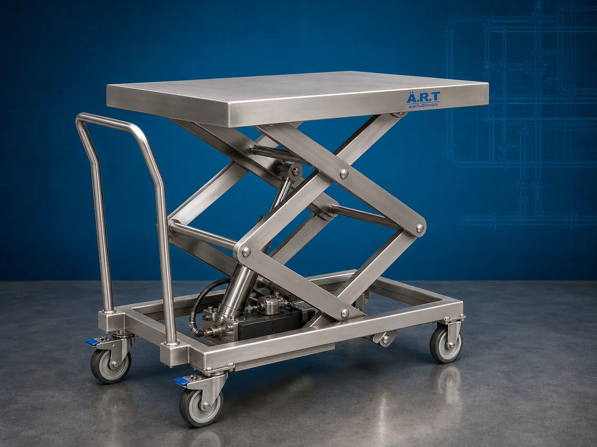

Scissor Lift (Industrial Hydraulic Lifting Platform & Material Handling System)
A Scissor Lift, also known as a Hydraulic Scissor Lift Platform, Industrial Lift Table, or Material Lifting Platform, is a heavy-duty industrial lifting equipment designed for vertical lifting, loading, unloading, material handling, maintenance work, pallet movement, machine servicing, and…

About the Scissor Lift
Scissor lift systems are widely used for: ✔ Industrial material lifting ✔ Warehouse loading and unloading ✔ Elevated maintenance operations ✔ Production line material handling ✔ Pallet lifting applications ✔ Factory automation support systems
The machine improves: ✔ Workplace safety ✔ Material handling efficiency ✔ Labor productivity ✔ Operational convenience ✔ Loading and unloading speed ✔ Industrial workflow management
Industrial scissor lifts are manufactured using: ✔ Hydraulic lifting systems ✔ Heavy-duty scissor mechanisms ✔ High-strength steel platforms ✔ Electro-hydraulic automation systems
to ensure safe and reliable lifting performance under industrial operating conditions.
Scissor lifts are widely used in industries such as:
Warehousing & logistics industries
Manufacturing industries
Automobile industries
Packaging industries
Food processing industries
Pharmaceutical industries
Construction industries
Maintenance facilities
where safe and efficient vertical lifting operations are essential.
The machine is highly suitable for: ✔ Pallet lifting ✔ Machine loading ✔ Warehouse operations ✔ Material transfer ✔ Maintenance work ✔ Dock level lifting
ART Mechatronics offers high-performance scissor lifts, engineered for heavy-duty industrial lifting, hydraulic safety operation, smooth vertical movement, and reliable long-term performance.
Working Principle of Scissor Lift
Goods, pallets, machinery, or operators are placed on lift platform
Hydraulic power unit activates scissor mechanism through hydraulic cylinders
Scissor arms expand vertically and raise platform smoothly upward.
Machine lifts: ✔ Pallets ✔ Boxes ✔ Machinery ✔ Industrial equipment ✔ Maintenance personnel ✔ Bulk materials safely to required working height.
Heavy-duty scissor structure ensures: Stable lifting Smooth movement High load-bearing capacity Safe industrial operation
Hydraulic control system lowers platform safely after operation completion
Scissor lift integrates with: Conveyors Dock systems Production lines Warehouse systems AGV/AMR automation systems
Types of Scissor Lifts
- 1. Hydraulic Scissor Lift
Designed for: ✔ Heavy-duty industrial lifting applications
- 2. Mobile Scissor Lift
Suitable for: ✔ Portable maintenance and material handling operations
- 3. Stationary Scissor Lift
Uses: ✔ Fixed industrial lifting platform systems
- 4. Pit Mounted Scissor Lift
Designed for: ✔ Flush floor loading and unloading applications
- 5. Double Scissor Lift
Suitable for: ✔ High vertical lifting height applications
- 6. Heavy Duty Industrial Scissor Lift
Designed for: ✔ Large industrial load handling operations
Industries Using Scissor Lifts
🚚 Warehousing & Logistics Industry Loading and unloading platform systems 🏭 Manufacturing Industry Material transfer and production line lifting systems 🚗 Automobile Industry Machine servicing and component lifting systems 📦 Packaging Industry Packaging line material handling systems 🍃 Food Processing Industry Hygienic material transfer and maintenance systems 💊 Pharmaceutical Industry Controlled industrial lifting operations 🏗️ Construction Industry Elevated maintenance and lifting systems 🏢 Industrial Maintenance Industry Maintenance access platform systems
Features & Advantages
✔ Safe and efficient vertical lifting system ✔ Heavy-duty hydraulic lifting mechanism ✔ Smooth and stable platform operation ✔ High load-bearing capacity ✔ Improves workplace safety and productivity ✔ Compact and space-saving design ✔ Easy operation and low maintenance ✔ Energy-efficient electro-hydraulic system ✔ Easy integration with industrial automation systems
Technical Highlights
Lift Type: Hydraulic scissor lift Mobile scissor lift Pit mounted lift Lift table platform Construction: Heavy-duty mild steel structure Drive System: Hydraulic power pack Electro-hydraulic operation Features: Safety railing Emergency stop system Overload protection Limit switches Operation: Push button control PLC automation optional
Turnkey Scissor Lift Solutions
ART Mechatronics offers: Complete hydraulic scissor lift systems Warehouse lifting and loading solutions Conveyor and dock integration systems Customized industrial lifting platforms Installation & commissioning After-sales service & AMC
Why Choose Art Mechatronics
Expertise in industrial lifting and material handling systems Customized scissor lift solutions for multiple industries High-performance hydraulic lifting technology Heavy-duty and durable industrial construction Proven industrial performance across sectors
Applications
Warehouses & Logistics Centers Manufacturing Plants Automobile Industries Packaging Facilities Food Processing Plants Industrial Maintenance Facilities
Related Conveying & Handling machines
Get pricing & specs for the Scissor Lift
Share the product, target capacity, current process and plant location. These details help our engineers discuss the right machine or line configuration.
One partner, from design to start-up
ART Mechatronics designs, manufactures, installs and commissions your Scissor Lift solution with regional presence in India, UAE and Thailand.